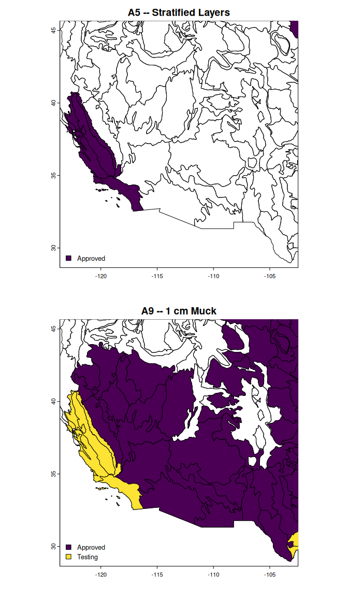

The goal of {hydricsoils} is to provide easy access to definitions, criteria, and area of applicability for ‘Field Indicators of Hydric Soils in the United States’ and also to provide tools which assist in evaluating associated soil morphology.
Installation
You can install the development version of {hydricsoils} like so:
if(!require("remotes")) install.packages("remotes")
remotes::install_github("brownag/hydricsoils")Examples
Example 1
This basic example shows how to determine the area of applicability of indicator “A9” (also known as “1 cm Muck”).
library(hydricsoils)
#> hydricsoils v0.1.2 -- using:
#> - 'Field Indicators of Hydric Soils in the United States' v9.0 (2024)
#> - 'Land Resource Regions and Major Land Resource Areas of the United States, the Caribbean, and the Pacific Basin' v5.2 (2022)
data(fihs, package = "hydricsoils")
subset(fihs, fihs$indicator == "A9", select = c("usage", "usage_symbols", "except_mlra"))
#> usage
#> 9 For use in LRRs D, F, G, H, P (except for MLRA 136), and T; for testing in LRRs C, I, J, and O
#> usage_symbols except_mlra
#> 9 D, F, G, H, P, T 136If we load the MLRA v5.2 database using lrrmlra_geometry() (requires {terra}) we can visualize the extent of where the “A9” indicator is used.
There is a function in the package called plot_indicator_usage() which simplifies the process of loading and subsetting the geometry. It provides some simple defaults for visualizing areas where usage is “Approved”, “Excluded” or in “Testing”.
plot_indicator_usage(
"A9",
test_areas = TRUE,
ext = c("Approved", "Excluded"),
crs = "EPSG:5070",
plg = list(x = "bottomleft")
)
#> Loading required namespace: terra
Example 2
Next let’s find all of the indicators that can be used in LRR “C” (also known as the “California Subtropical Fruit, Truck, and Specialty Crop Region”)
subset(fihs, fihs$indicator %in% usesym_to_indicator("C"),
select = c("indicator", "indicator_name"))
#> indicator indicator_name
#> 1 A1 Histosol or Histel
#> 2 A2 Histic Epipedon
#> 3 A3 Black Histic
#> 4 A4 Hydrogen Sulfide
#> 5 A5 Stratified Layers
#> 11 A11 Depleted Below Dark Surface
#> 12 A12 Thick Dark Surface
#> 18 A18 Iron Monosulfide
#> 19 S1 Sandy Mucky Mineral
#> 22 S4 Sandy Gleyed Matrix
#> 23 S5 Sandy Redox
#> 24 S6 Stripped Matrix
#> 30 F1 Loamy Mucky Mineral
#> 31 F2 Loamy Gleyed Matrix
#> 32 F3 Depleted Matrix
#> 33 F6 Redox Dark Surface
#> 34 F7 Depleted Dark Surface
#> 35 F8 Redox DepressionsCompare to LRR “D” (also known as the “Western Range and Irrigated Region”)
subset(fihs, fihs$indicator %in% usesym_to_indicator("D"),
select = c("indicator", "indicator_name"))
#> indicator indicator_name
#> 1 A1 Histosol or Histel
#> 2 A2 Histic Epipedon
#> 3 A3 Black Histic
#> 4 A4 Hydrogen Sulfide
#> 9 A9 1 cm Muck
#> 11 A11 Depleted Below Dark Surface
#> 12 A12 Thick Dark Surface
#> 18 A18 Iron Monosulfide
#> 19 S1 Sandy Mucky Mineral
#> 22 S4 Sandy Gleyed Matrix
#> 23 S5 Sandy Redox
#> 24 S6 Stripped Matrix
#> 30 F1 Loamy Mucky Mineral
#> 31 F2 Loamy Gleyed Matrix
#> 32 F3 Depleted Matrix
#> 33 F6 Redox Dark Surface
#> 34 F7 Depleted Dark Surface
#> 35 F8 Redox DepressionsThese outputs match the information we can find in the guide in Appendix 1.
It is important to remember that the area of applicability across Land Resource Regions and Major Land Resource Areas can subtly differ.
The main difference between LRRs “C” and “D” is that indicator “A5” is approved for use in LRR “C” whereas “A9” is approved for use in LRR “D”. Note that while “A9” is available for testing in “C”, “A5” is not being considered for use in LRR “D”.
We can visualize this by expanding the first example to include “A5” in a separate pane. We limit the extent to just LRRs “C” and “D”.
x <- lrrmlra_geometry()
xext <- subset(x, x$LRRSYM %in% c("C", "D"))
par(mfrow = c(2, 1))
plot_indicator_usage(
"A5",
test_areas = TRUE,
ext = xext,
plg = list(x = "bottomleft")
)
plot_indicator_usage(
"A9",
test_areas = TRUE,
ext = xext,
plg = list(x = "bottomleft")
)
Future work
In future updates I hope to include:
_ A defined data.frame format with standard column names, data types, and relationships that are needed to evaluate criteria for all established and provisional indicators
_ A glossary with definitions of key criteria and terms
_ An index to figures and pictures from the guide, and mapping of figures to specific indicators
_ Parsing of LRRs and MLRAs where provisional indicators are being tested
_ Routines for automatic evaluation of input data to determine which indicators may be met
_ Spatial methods for determining appropriate indicators to consider
✔️ Helpers for creating graphics depicting where indicators are used or not (DONE: see
plot_indicator_usage())
Disclaimer
The data and routines in this R package (hereafter the “Work”) are not intended as a replacement for a thorough understanding of the latest edition Field Indicators of Hydric Soils as distributed by official sources.
This Work is released under the Creative Commons 1.0 Universal license. In particular the Work is provided “as-is” and makes no representations or warranties of any kind, express, implied, statutory or otherwise, including without limitation warranties of title, merchantability, fitness for a particular purpose, non infringement, or the absence of latent or other defects, accuracy, or the present or absence of errors, whether or not discoverable, all to the greatest extent permissible under applicable law.
References
United States Department of Agriculture, Natural Resources Conservation Service. 2024. Field Indicators of Hydric Soils in the United States, Version 9.0. Available online: https://www.nrcs.usda.gov/resources/guides-and-instructions/field-indicators-of-hydric-soils
United States Department of Agriculture, Natural Resources Conservation Service. 2022. Land resource regions and major land resource areas of the United States, the Caribbean, and the Pacific Basin. U.S. Department of Agriculture, Agriculture Handbook 296. Available online: https://www.nrcs.usda.gov/resources/data-and-reports/major-land-resource-area-mlra